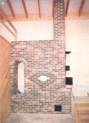
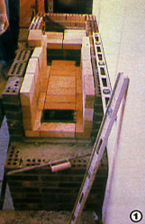
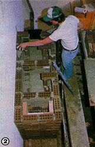
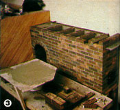
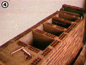
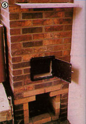
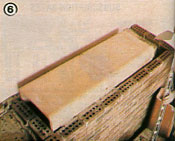

In the first six installments of "My MOTHER's House", we've discussed the construction techniques used in erecting our earth-sheltered building and described its solar heating and cooling systems. However, despite our structure's inherently low demand for energy, and the solar gain it receives, there are likely to be times - although surely only in the dead of winter - when a little boost will be needed to maintain a comfortable interior temperature.
As most of you already know, auxiliary wood heat - largely because of its relatively low cost - is probably the most popular form of backup for energy-efficient buildings. Nowadays, most people choose steel- or iron-bodied stoves, since such heaters are widely recognized to be far more efficient than are conventional fireplaces. However, with more and more individuals discovering the attributes of the so-called Russian fireplace, that bit of standard wisdom is about to be left by the wayside.
In Europe, massive masonry "stoves" have long been (and still are) in general use. Historically, of course, the open hearth dates back to the Dark Ages, but even the comparatively advanced (by today's standards) Russian fireplace predates Ben Franklin's famous heater. At one time, the grubka (as it's called) was commonplace in rural Russian homes, and the concept actually arrived on our shores when a White Russian community formed in Richmond, Maine around the turn of the century.
A massive masonry fireplace is quite different in concept from an "airtight" stove. The common metal heaters provide warmth over extended periods by working under predominantly starved combustion-air conditions. The Russian heater, on the other hand, has an unrestricted air supply and burns its charge of fuel rapidly. The high-temperature flue gases that are generated in the long, narrow firebox are then forced to wind their way through a series of baffles built into the brickwork above the firebox. In the process, a very large percentage of the heat is given up to the masonry. In a typical Russian fireplace, a load of fuel will be all but out after only three hours, but the warmth that's been absorbed by the bricks will continue to radiate for another seven to nine hours!
Obviously enough, it'd be pretty much impossible to load up a 7,500-pound mass of bricks and move it into a laboratory for testing. Consequently, it isn't often easy to compare performance figures for Russian fireplaces with those of conventional heaters. The work that has been done, however, suggests that the very best masonry heaters may have efficiency ratings approaching 90% . . . exceeding even the best metal-bodied stoves. (You might compare that rating to those - for airtight heaters - quoted in the article that begins on page 40.)
Better still, the list of the advantages of Russian fireplaces doesn't stop with improved efficiency (which, incidentally, could result in a saving of a third or more of the wood that'd be needed to warm the same area with a conventional woodstove). Masonry-stove owners also encounter very little creosote accumulation, because of the hightemperature, efficient combustion typical of such units. Of course, a low-smoke fire does minimal damage to our atmosphere's health, as well . . . since free-breathing combustion yields less carbon monoxide and particulate matter than does the choked variety.
There are, however, a few restraints to consider before (and while ) planning a massive masonry heater. For one, the several-ton devices are obviously a bit more complicated to install than metal heaters, and they require a stout foundation to support their weight, too. In fact, Russian fireplaces are best used in new construction, where they can be planned into a building for proper orientation. The warmest part of such a stove's surface (where temperatures can reach more than 150°F) is the side farthest from the loading door. In turn, the fueling end is the coolest, while the two long sides tend to be about equal in warmth.
Consequently, the fireplace should be centrally located, and its hottest end should project into an area where family members spend much of their time. In some cases, it proves advantageous to position the loading end in another, less used, room. And it's even possible to extend the top of the heater through the floor into a second story. (Be aware, though, that the brick surfaces of Russian fireplaces do require adequate clearance from combustible objects.)
A quick glance at the accompanying photos will reveal that we've violated some of these orientation principles in building our own fireplace. Because of the need to accommodate as many as 100 people at a time - during demonstrations - in the main room, it simply wasn't possible to place the heater where we would have preferred to, had the house been planned to serve as a residence.
When we began to look into the subject of massive masonry fireplaces, we ordered plans and information from every source we could dig up. After reviewing a stack of interesting packages, we finally decided to use drawings by Basilio Lepuschenko . . . because of the designer's fine reputation and because of the simplicity of his brickwork, which our crew believed to be within the abilities of many non masons. (At the same time, though, we'd like to encourage you to investigate the other sources in the list that accompanies this article. We learned much from their material, as well.)
The Lepuschenko masonry stove can have either three or five baffle passages, which are oriented vertically above the firebox. The exhaust gases pass out the end of the firebox and then rise and fall through this masonry heat exchanger. Back atop the loading door, a conventional 8" X 8" chimney lets the cooled flow escape to the outside.
Because of the proposed location of the doors - which would be reached from the first landing of the staircase - and the fact that the brickwork could also provide solar heat storage if it were high enough along the wall, we built an extra-thick base for our fireplace. A passage was left in the center of the rising courses of exterior brick so that ashes could be dumped down from the firebox to a collection area below, and - at floor level - an 8"-square cleanout door permits ash removal.
The baffle section of the fireplace is some 13 courses high, and the passages are capped with the two halves of a split 17" X 17" flue tile. Our masons found that the brickwork in this area had to be carefully planned, but that laying the courses wasn't difficult.
We used up a total of about 1,600 bricks for the fireplace and chimney, though Mr. Lepuschenko estimates that 1,000 should be sufficient for a shorter model built with its firebox only a few courses above floor level. Naturally, our masons made a few alterations of their own to the design as they went . . . including the addition of a wood storage arch (to the left of the main part of the fireplace) and the shelf that extends before the loading door. You may also notice a little bit of fancy bricklaying on the front, into which a handmade tile (produced by one of the artisans at the Eco-Village craft shop) is set.
Thus far we have burned nothing more than wads of paper in our heater, since a curing time of up to four months - helped along by such brief blazes - is desirable (not to mention the fact that our summer of 1982 weather hasn't demanded any extra heat). According to Lepuschenko, the five-flue model (which is the one we used) should warm 1,200 square feet of living space, while the three-flue stove can handle about 800. If those estimates are based on the designer's home climate - in Maine! - we've got a feeling that our Russian fireplace will more than do the job in MOM's house.
RUSSIAN SOURCES
Maine Wood Heat Co., plans and hardware for a horizontal-baffle masonry heater.
The Book of Masonry Stoves: Rediscovering an Old Way of Warming by David Lyle
This is part of a seven-part series on building My Mother's House.
Part I, Part II, Part III, Part IV, Part V, Part VI
|
 STAFF PHOTOS Our finished Russian Fireplace. |
 Firebricks are laid - without mortar - to line the firebox. |
 The brickwork for the five heat-exchanging passages begin. |
|
 Baffle section - view 1. |
 Baffle section - view 2. |
 The damper can be seen at the top of this photo. . . while the chimney's cleanout door and firebox are below. |
|
 The passages are capped with a split 17-inch flue tile. |
|
|